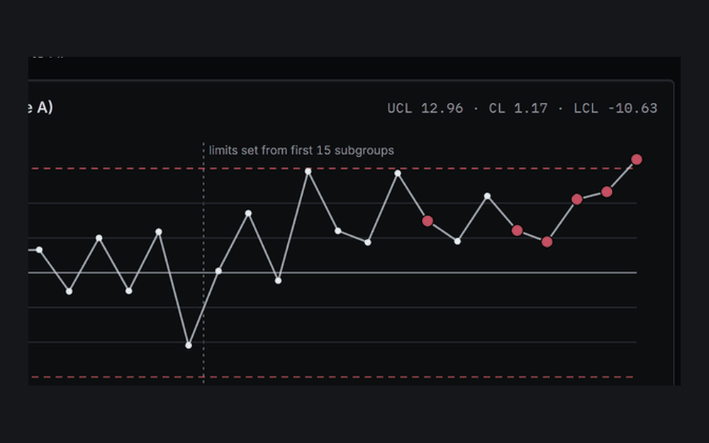
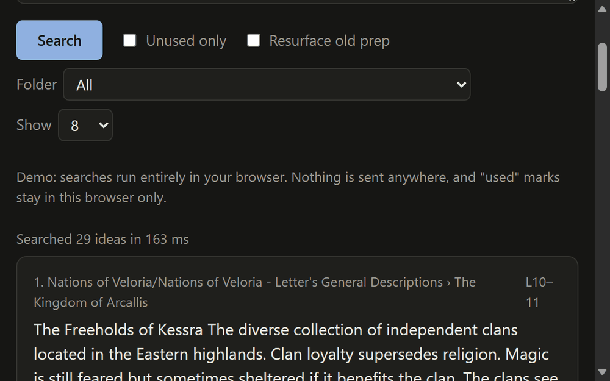
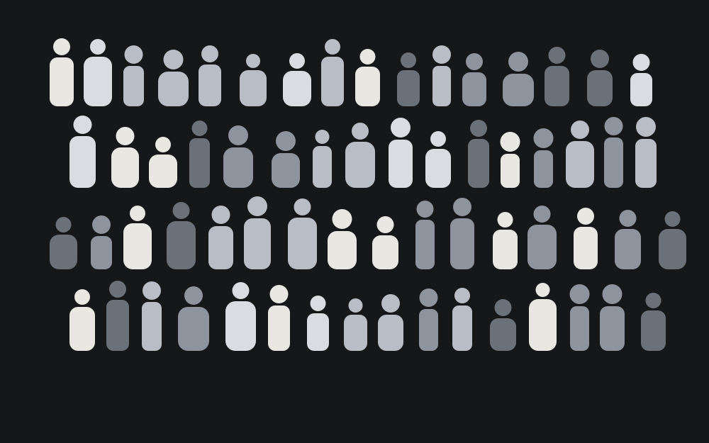

Automation Program Management Intern
Taiwan Semiconductor Manufacturing Company, Summer 2026
Audited 130 automated procedures across more than 2,200 tools and shipped a key performance indicator for the whole platform.
I study industrial engineering at Georgia Tech and graduate in May 2028. This past summer I interned at Taiwan Semiconductor Manufacturing Company in Arizona, where I audited automated procedures to find the ones that were failing without anyone noticing.
I'm looking for internships in technical program management, operations focused product management, supply chain, or data and analytics.
Runs, scanned
An illustration of the gap I found at the fab. Each mark is one run, and about 5 percent never ran. This is not real data.
Automation Program Management InternIntelligent Manufacturing Engineer Intern, Phoenix, Arizona, May to August 2026
Automated procedures at the fab watch for a condition and act on it, and the platform reports how many of the runs it started were successful. It had no record of the runs that never started. I proposed an audit of that gap, scoped it, and led it across 130 automated procedures and more than 2,200 tools. The audit found silent failures equal to 4 to 6 percent of the runs that did start.
The procedures had been written from inconsistent templates, so I turned them into detection specifications and found owners for them across several departments and with teams in Taiwan, where I worked in Mandarin. I wrote SQL and Python against more than 1,000,000 daily log entries and set up on-call alerts for critical misses.
I quantified about 600 hours a month of manual work and an estimated six figures in scrap, with wafers worth about $25,000 each, by prioritizing the fixes that protect wafer flow. I also built a reusable audit template organized by candidate type.
I shipped a key performance indicator across the whole platform, time saved per run, that measures what each automation is actually worth, along with four Power BI dashboards that are now in active use. The indicator was approved after I presented it to the head of manufacturing for Fab 21, and it has been implemented.

Live demoAn audit that rebuilds what automated procedures should have caught. On synthetic data it found 26.1 percent of cases missed, and on a real semiconductor dataset it mostly did not work, which I wrote up.

In progressFinds the notes you already wrote that fit what is happening at the table. It only searches your own writing and never generates anything.

ReleasedA Mount & Blade II: Bannerlord mod that gives every soldier a build and a face that stay the same, and adds women to the ranks.
Taiwan Semiconductor Manufacturing Company, Summer 2026
Audited 130 automated procedures across more than 2,200 tools and shipped a key performance indicator for the whole platform.
Microsoft Student Research, September 2026 to present
Research on AI-powered incident management and on-call tooling for a Microsoft product team. Competitive teardowns, market sizing and discovery, including a teardown of one competitor across six evaluation tracks with sourced evidence that separates verified capability from vendor marketing.
Product @ GT, Georgia Tech, August 2026 to present
B.S. in Industrial Engineering, concentration in Analytics and Data Science, graduating May 2028
Coursework includes Database Systems, Engineering Optimization, Simulation Analysis and Design, Quality Improvement Methods, and Regression and Forecasting.
I start by learning the field I'm auditing. At the fab I spent my first week on manufacturing principles, then learned the automation platform and the standard process for creating and editing procedures, and only after that went looking for the problem.
Being able to read the data and understand the system behind it is what let me find false negatives, the lack of standardization in both the templates and the auditing procedure, and the fact that nothing measured what an automation was worth. That last gap became the key performance indicator I shipped.
When I run into pushback, I either gather more evidence and data or move to the next best option. The key performance indicator and the calls I made to people in Taiwan both came out of that.
I grew up in Hangzhou and I'm fluent in Mandarin, which I used at Taiwan Semiconductor Manufacturing Company to work with teams in Taiwan. I have six years of acting experience, and I run a Dungeons & Dragons campaign.
Storytelling is my favorite thing. When I have an idea to get across, I spend a lot of time thinking about who I'm telling, what they get out of it, and how they will best receive it. Being able to bring both facts and emotion into my presentations and performances is something I'm very grateful for. It has made me adaptable and curious about how both systems and people operate, so I can adjust how I tell a story to fit them, the same way my dashboards should fit the people who use them.